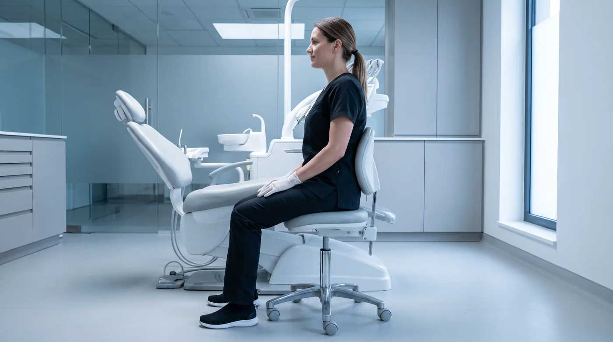

Материал для специалистов
Статья описывает общие принципы организации рабочего места. При наличии жалоб на боль обратитесь к врачу — самостоятельная коррекция позы при уже развившемся нарушении может усугубить ситуацию.
Что именно расходуется
Работа гигиениста сочетает три фактора, каждый из которых по отдельности переносится нормально, а вместе они дают накопительный эффект: длительная статичная поза, мелкая моторика с усилием и постоянное напряжение зрения на близкой дистанции.
- Шейный отдел — наклон головы вперёд многократно увеличивает нагрузку на шею по сравнению с вертикальным положением.
- Поясница — статичная поза без опоры и разворот корпуса к пациенту.
- Кисть и предплечье — жёсткий хват, вибрация, повторяющиеся движения.
- Зрение — постоянная аккомодация на близкой дистанции и работа в аэрозоле.
Для клиники это не абстракция: специалист с хронической болью работает медленнее, чаще уходит на больничный и в какой-то момент уходит из профессии. Стоимость замены обученного гигиениста заметно выше стоимости хорошего стула.

Начинается с положения пациента
Самая частая ошибка — подстраивать себя под то, как удобно лёг пациент. Правильная последовательность обратная: сначала специалист занимает нейтральную позу, затем кресло и подголовник настраиваются под неё.
- Пациент лежит, а не полусидит — если нет медицинских ограничений.
- Высота кресла такая, чтобы рабочее поле оказалось примерно на уровне локтей специалиста.
- Подголовник активно используется: разворот и наклон головы пациента избавляют специалиста от необходимости тянуться.
- Просить пациента повернуть голову — нормальная часть работы, а не неудобство.
Посадка специалиста
| Параметр | Ориентир | Что бывает при нарушении |
|---|---|---|
| Спина | Опора на спинку, поясничный изгиб сохранён | Нагрузка на поясницу, сутулость |
| Бёдра | Чуть ниже уровня коленей, угол более 90° | Пережатие, застой, дискомфорт в пояснице |
| Стопы | Полностью на полу | Перекос таза |
| Локти | Близко к корпусу, предплечья горизонтально | Перегрузка надплечий |
| Голова | Минимальный наклон, взгляд вниз глазами | Хроническое напряжение шеи |
| Корпус | Без скручивания, перемещаться вокруг кресла | Асимметричная нагрузка на позвоночник |
Признак, что посадка нарушена
Если к концу приёма привычно ноет одна и та же зона — это не усталость, а систематическая ошибка настройки. Усталость распределяется, перегрузка локализуется.
Зрение и освещение
- Бинокулярные лупы дают не только обзор, но и фиксированную рабочую дистанцию — они физически не дают наклониться к полю. Для шеи это часто важнее, чем увеличение.
- Общее освещение кабинета не должно резко контрастировать со светом лампы: постоянная переадаптация утомляет глаза.
- Защита глаз обязательна при аэрозольобразующих процедурах — см. статью об аэрозоле на приёме.
- Перевод взгляда вдаль в паузах между пациентами снимает спазм аккомодации.
Кисть, хват, инструмент
Кисть страдает от сочетания жёсткого хвата, вибрации и повторяющихся движений. Что снижает нагрузку:
- Толстые лёгкие ручки инструментов — тонкая ручка вынуждает сжимать сильнее.
- Острые инструменты. Тупой инструмент компенсируется усилием, и это усилие идёт через кисть.
- Опора пальца при работе — снимает часть нагрузки с кисти.
- Расслабление хвата между этапами: держать инструмент постоянно сжатым не требуется.
- Шланги и провода не должны тянуть наконечник — вес и натяжение приходятся на кисть.
Отдельно: пульсирующая подача при засоре наконечника заставляет компенсировать хватом и давлением. Регламентный уход за оборудованием — это в том числе эргономика. Об этом — в статье о порошке и наконечнике.
ergonomika-hvat.webp
Микропаузы
Наиболее реалистичная стратегия — не «разминаться раз в день», а разгружать по ходу дня.
- Между пациентами: встать, выпрямиться, свести лопатки, перевести взгляд вдаль. Полминуты.
- Внутри длинного приёма: при смене этапа сменить и позу, разжать кисть, опустить плечи.
- Чередование нагрузки: по возможности не ставить подряд несколько тяжёлых приёмов.
- Работа в четыре руки снижает не только время процедуры, но и амплитуду движений специалиста.
Что может сделать клиника
- Стул с поясничной поддержкой и регулировкой наклона сиденья — базовое оборудование, а не привилегия.
- Лупы — обсуждаемая инвестиция, особенно для специалистов с большим потоком.
- Реалистичное расписание с окнами: они нужны и для оседания аэрозоля, и для разгрузки.
- Ассистирование на аэрозольобразующих этапах.
- Своевременное обслуживание наконечников и заточка инструментов.
Эргономика выглядит как забота о сотруднике, а считается как экономика: она напрямую влияет на число приёмов, которые специалист способен провести без потери качества.
Материал носит информационный характер и не является медицинской рекомендацией. При появлении устойчивой боли обратитесь к врачу.